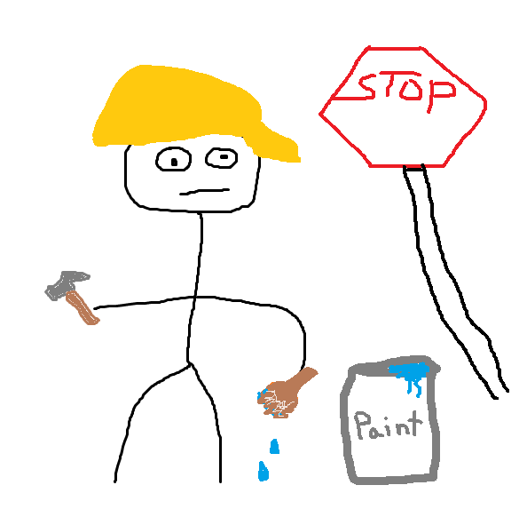

Page In Progress
If you're looking for some of my writing, check out my portfolio to see some professional samples or take two minutes and read my recent essay about overstimulation and its isolating nature.
Read Essay
This part of the site isn't quite finished. My bad.
Check back soon, please!